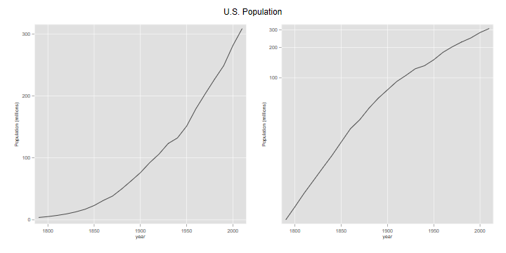
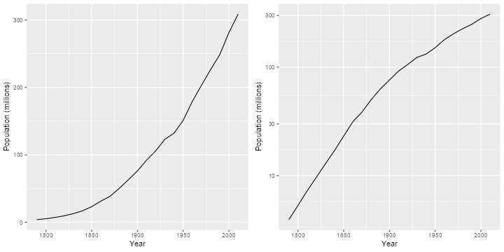
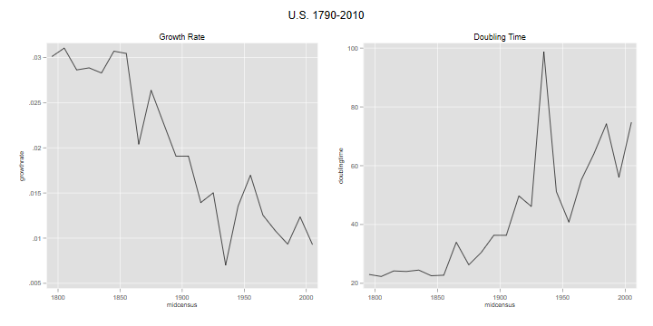
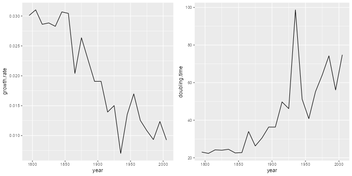

The U.S. Census Bureau has population counts for the U.S. from 1790 to 2010. I got the counts up to 2000 from Table 4 in this Census Report (Table 2 had slightly different counts for 1830 and 1940), and added the 2010 count from Wikipedia.
These data are in an ascii file called
uspop1790to2010.dat in the datasets section of this
website. The file has two columns representing year and population. The
first task is to read the data.
. infile year long pop using /// > https://grodri.github.io/datasets/uspop1790to2010.dat, clear (23 observations read)
> library(dplyr)
> library(ggplot2)
> library(gridExtra)
> us <- read.table("https://grodri.github.io/datasets/uspop1790to2010.dat",
+ header=FALSE, col.names=c("year","pop"))
We will plot the population in millions (otherwise we get bad labels) using absolute and log scales.
. gen pm = pop/1000000
. label var pm "Population (millions)"
. line pm year, name(abspop, replace)
. line pm year, yscale(log) name(logpop, replace)
. graph combine abspop logpop, title("U.S. Population") ysize(4) xsize(8)
. graph export uspop.png, replace width(720) height(360)
file uspop.png saved as PNG format

> us <- mutate(us, pm = pop/1000000)
> g1 <- ggplot(us, aes(x=year, y=pm)) + geom_line() + xlab("Year") +
+ ylab("Population (millions)")
> g2 <- ggplot(us, aes(x=year, y=pm)) + geom_line() + xlab("Year") +
+ ylab("Population (millions)") + scale_y_log10()
> g <- arrangeGrob(g1,g2,ncol=2)
> ggsave("uspopr.png", plot=g, width=10, height=5, dpi=72)

What was the growth rate in the last intercensal period? Let us list the population counts for the last two censuses. We specify a format so Stata doesn’t list large numbers using scientific notation; %14.0fc tells Stata to use up to 14 digits with no decimal, using a comma to indicate thousands.
. format pop %14.0fc
. list pop in -2/-1
┌─────────────┐
│ pop │
├─────────────┤
22. │ 281,421,906 │
23. │ 308,745,538 │
└─────────────┘
. di pop[_N] - pop[_N-1]
27323632
> tail(us, 2) year pop pm 22 2000 281421906 281.4219 23 2010 308745538 308.7455 > diff(tail(us$pop, 2)) [1] 27323632
So the U.S. population grew by 27,323,632 between 2000 and 2010. Verify that in the previous intercensal period it grew by 32,712,048.
If we divide the population increase by the population at the start of the intercensal period, or just take the ratio and subtract one, we obtain
. scalar ratio = pop[_N]/pop[_N-1] . di ratio - 1 .09709135
> last <- length(us$pop) > ratio <- us$pop[last]/us$pop[last-1] > ratio - 1 [1] 0.09709135
So the population grew by 9.7% in ten years. You’d think this is 0.97% per year, but that is only approximate because it doesn’t compound the growth over the ten years. If we start with a population P1 and compound k times per year at an annual rate r for ten years, the population will grow to P2 = P1(1+r/k)(10k)#. Solving for r* gives a growth rate of r = k[(P2/P1)(1/(10k))-1]. Here’s the rate we obtain using different values of k
. mata:
───────────────────────────────────────────────── mata (type end to exit) ──────
: ratio = st_numscalar("ratio")
: k = (1\2\4\6\12\52\365)
: r = k :* (ratio:^(1 :/ (10 :* k ) ) :- 1)
: k, r
1 2
┌─────────────────────────────┐
1 │ 1 .0093093093 │
2 │ 2 .0092877438 │
3 │ 4 .009276986 │
4 │ 6 .0092734037 │
5 │ 12 .0092698233 │
6 │ 52 .0092670704 │
7 │ 365 .0092663624 │
└─────────────────────────────┘
: end
────────────────────────────────────────────────────────────────────────────────
> ratio <- us$pop[last]/us$pop[last-1]
> k <- c(1, 2, 4, 6, 12, 52, 365)
> r <- k * (ratio^(1 / (10 * k ) ) - 1)
> data.frame(k=k, r=r)
k r
1 1 0.009309309
2 2 0.009287744
3 4 0.009276986
4 6 0.009273404
5 12 0.009269823
6 52 0.009267070
7 365 0.009266362
A unit value of k means compounding anually, 12 means monthly, and 365 means daily. We could continue compounding every minute, or every second, but you can see that our calculation is quickly approaching a limit. From elementary calculus we know that as k our equation becomes P2 = P1 exp(10 r), and solving for r* gives log(P2/P1)/10, so the limiting value is
. display "r=" log(ratio)/10 r=.00926624
> log(ratio)/10 [1] 0.009266245
This is a mean annualized rate of growth. Note that by the time we compounded every two months we already had the correct value to five decimal places.
We can now compute the growth rate for the entire (census) history of the U.S. We treat all censuses as ten years apart, although this is not exactly true: over time the census has moved from August to June, and then April (except for 1920, which was done in January). If you want to do a more precise calculation, the dates needed are in the reference given at the top.
. gen growthrate = log(pop/pop[_n-1])/10 (1 missing value generated)
> gr <- diff(log(us$pop))/10
Note the use of _n-1 to refer to the
previous value, generating a missing value for the first row
Now we plot the rates over time. Because the growth rate pertains to the period between two censuses, it makes sense to plot against the mid-points of the census years, excluding the last
. gen midcensus = (year + year[_n-1])/2 (1 missing value generated) . line gr midcensus, name(usgr, replace) title(Growth Rate)
> mc <- us$year[-last] + 5 > usg <- data.frame(year = mc, growth.rate = gr) > g1 <- ggplot(usg, aes(x=year, y=growth.rate)) + geom_line()
The graph is shown further below, combined with a plot of doubling time. We see that the growth rate was around 3% for about half the 19th century, declined steadily for almost 100 years with a pre-war dip, rebounded with the post-war baby boom, and then resumed its decline.
At an instantaneous growth rate r, the doubling time is log(2)/r.
. gen doublingtime = log(2)/gr
(1 missing value generated)
. line doubling midcensus, name(usdt, replace) title("Doubling Time")
. graph combine usgr usdt, title("U.S. 1790-2010") ///
> ysize(3) xsize(6)
. graph export usgrdt.png, width(720) height(360) replace
file usgrdt.png saved as PNG format

> usg <- mutate(usg, doubling.time = log(2)/growth.rate)
> tail(usg,1)
year growth.rate doubling.time
22 2005 0.009266245 74.80346
> g2 <- ggplot(usg, aes(x=year, y=doubling.time)) + geom_line()
> g <- arrangeGrob(g1,g2,ncol=2)
> ggsave("usgrdtr.png", plot=g, width=10, height=5, dpi=72)

The U.S. population was doubling every 22-24 years in the first half of the 19th century, but the doubling time has increased steadily (except for a pre-war spike) and it now takes 75 years to double. Verify that in the previous intercensal period the growth rate was 0.0124 and the doubling time was 56 years.
Updated 22-Jan-2016